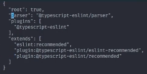
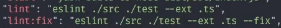
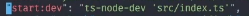

Curso consiste em mostrar o desenvolvimento em NodeJS o mais próximo possível do mundo real. Curso ministrado por Waldemar Neto.
basicamente precisamos instalar : npm install -D @typescript-eslint/eslint-plugin eslint @typescript-eslint/parser. Em seguida podemos criar o .eslintrc, e setar as seguintes configuracoes:
Logo após podemos ir dentro do package json e criar um comando para rodar o eslint , etambém fixar possíveis erros:
É importante termos um para concertar e outro para quebrar caso haja erros, pois em ambiente de desenvolvimento iremos querer concertar porém quando estivermos trabalhando com pipelines/etc não podemos permitir que ele suba com errors.
Precisamos instalar o ts-node através do comando: npm i -D ts-node-dev. Ems eguida podemos ir até o package json configurar o comando apra rodar através do TSNODEDEV. A grande diferenca é que o tsnode dev consegue apontar direto para um arquivo TypeScript.
Primeiro instalar npm install -D jest ts-jest @types/jest. O tsJest basicamente é o que faz o jest conversar com typescript. O próximo passo é criar a configuração do Jest ( Uma a global, e outra que iremos sobreescrever apenas para os testesfuncionais.)